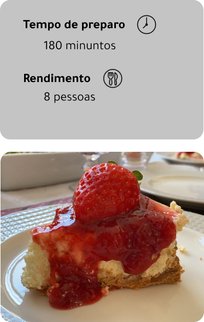

Ingredientes: base
- 200 gramas de bolacha maisena
- 100 gramas de manteiga sem sal derretida
Ingredientes: massa
- 400 gramas de cream cheese
- 200 gramas de açúcar
- 100 ml de leite
- Raspas de 2 limões
- Suco de 1 limão
- 1 colher de sopa de extrato de baunilha
- 1 pitada de sal
- 3 ovos
Ingredientes: calda e decoração
Calda:
- 200 gramas de morango
- Suco de 1 limão
- 1/2 xícara de açúcar
Decoração:
- 200 gramas de morango
Modo de preparo: base
- Processe a bolacha;
- Derreta a manteiga;
- Misture e coloque na forma apertando a massa com uma colher;
- Leve para assar por 10 minutos a 180°C;
- Deixe esfriar.
Modo de preparo: massa
- Com todos os ingredientes em temperatura ambiente, bata tudo menos os ovos. DICA: Não bata demais para não incorporar ar;
- Acrescente os ovos, 1 de cada vez, batendo até misturar;
- Jogue a massa por cima da forma com a base com cuidado;
- Fique de olho a partir de 1 hora e 10 min de cocção. A DICA aqui é, a sua cheesecake estará pronta quando você balançar a forma e o meio mexer mas o entorno ficar parado. Nesse momento desligue o forno e deixe a porta levemente entreaberta por 1 hora, com a cheesecake lá dentro;
- Após isso, retire e deixe esfriar em cima do fogão;
- Quando esfriar coloque na geladeira por pelo menos 2 horas.
Modo de preparo: calda
- Em uma panela ponha os morangos cortados ao meio, o suco do limão e o açúcar;
- Mexa até o ponto de geleia;
- Deixe esfriar e jogue por cima da cheesecake;
- Sirva com morangos por cima.
